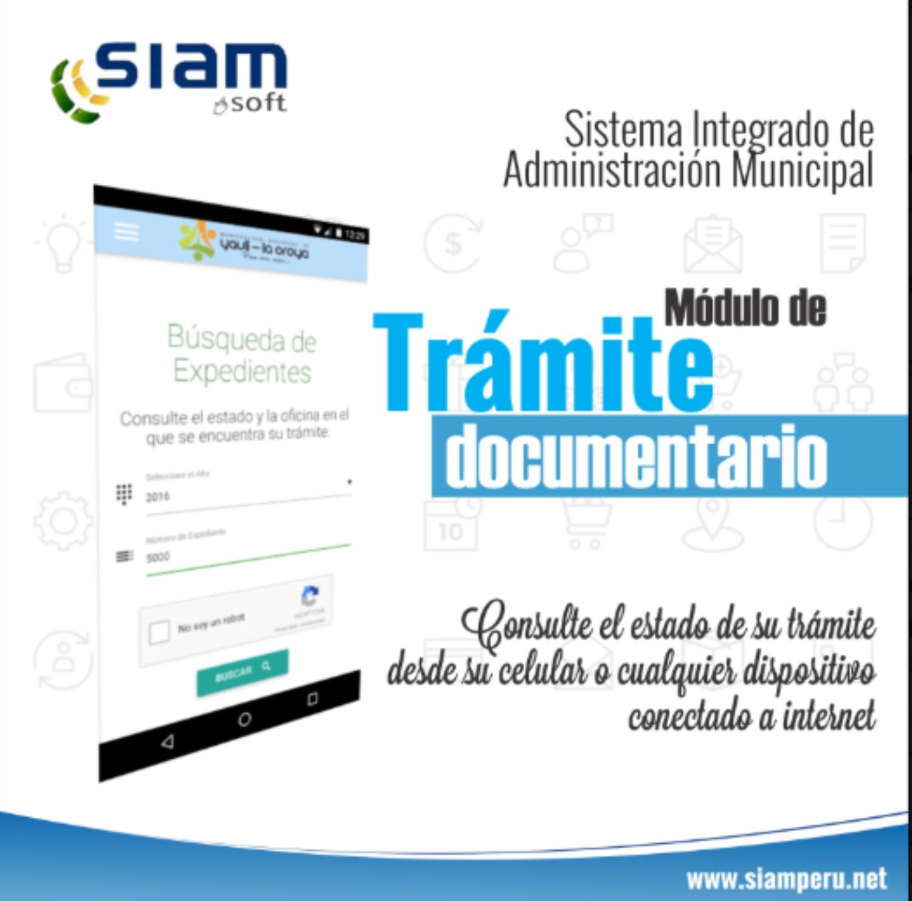
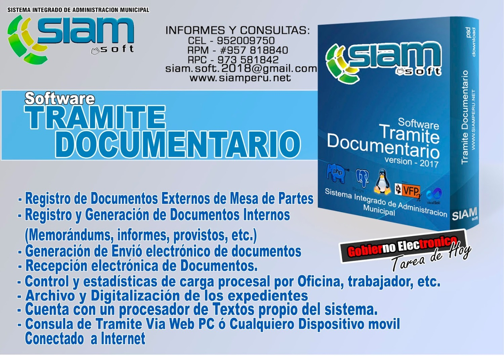

Beneficios del Software SIAM
Implementar nuestro sistema trae múltiples beneficios a tu institución, desde la optimización de recursos hasta la mejora en la atención al público:
- Mayor transparencia en la gestión documental
- Ahorro de tiempo y reducción de burocracia
- Mayor control sobre documentos sensibles
- Automatización de tareas repetitivas
- Mejora en la atención al ciudadano
- Reducción de costos operativos
- Acceso remoto a documentos
- Cumplimiento normativo garantizado

